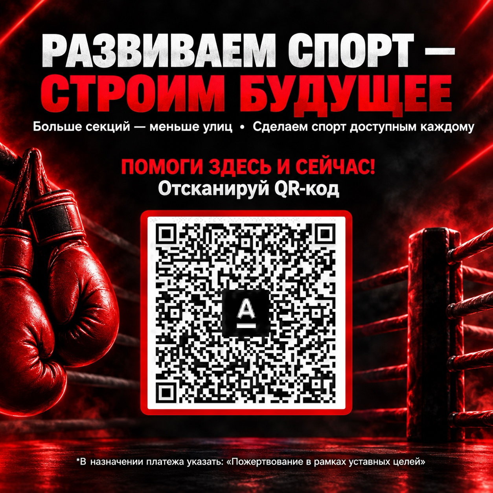

Благотворительный фонд развития «Статус-бокс» · Тюмень и Тюменская область
Фонд «Статус-бокс» собирает средства, чтобы бокс в Тюмени и Тюменской области развивался, а зал с рингом и тренеры оставались доступными для людей.
Главное
Благотворительный фонд развития «Статус-бокс» (сокращённо БФР «Статус-бокс») зарегистрирован 17 февраля 2026 года. Его задача — собирать средства, чтобы бокс в Тюмени и Тюменской области развивался и держался. Адрес фонда: г. Тюмень.
Список программ и правила помощи: [ЗАПОЛНИТЬ: список программ].
Каждый взнос идёт на то, чтобы бокс в Тюмени и области оставался доступным и развивался.
Разовый или регулярный взнос на развитие бокса и поддержку категорий, которым нужна помощь.

Отсканируй QR-код. В назначении платежа укажи: «Пожертвование в рамках уставных целей».
Бизнес может поддержать фонд, вечер или конкретное направление.
Условия партнёрства: [ЗАПОЛНИТЬ]
НаписатьФормулировки взяты из устава фонда (п. 12 и п. 15). Перед публикацией проверяется юристом.
По уставу фонд ежегодно представляет отчёт о своей деятельности в орган, который зарегистрировал фонд. Годовой отчёт и бухгалтерскую отчётность утверждает Совет фонда.
Публикация отчётов на сайте: [ЗАПОЛНИТЬ: решение Совета фонда]. Ссылка на годовой отчёт: [ЗАПОЛНИТЬ].
Единоличный руководитель фонда. Срок полномочий — 5 лет.
Имя и должность: [ЗАПОЛНИТЬ]
Высший коллегиальный орган. 3 члена, срок 5 лет. Работают на общественных началах, без вознаграждения.
Состав: [ЗАПОЛНИТЬ]
Надзорный орган фонда. Не менее 3 человек, срок 5 лет. Работает на общественных началах.
Состав: [ЗАПОЛНИТЬ]
Устав утверждён протоколом № 2 Совета фонда от 07.10.2026. Устав в новой редакции находится на рассмотрении в Министерстве юстиции.
Президент фонда: [ЗАПОЛНИТЬ: имя]. Состав органов — в блоке «Управление».